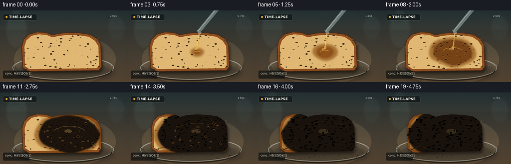
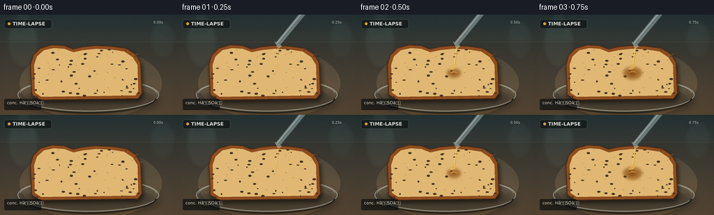

CODING AGENTS AS PIXEL WORLD MODELS
traex/GPT-5.6-Sol · phygen_151
点击播放 · 原生 RGB 像素
逐轮保存的候选
回放视频、检查图与代码变化。
每份候选均可单独播放。实际图片检查记录在下方工具轨迹中。
候选 01播放与检查图
点击播放 · 原生 RGB 像素


展开代码变化
--- 上一保存版本
+++ 本次保存版本
@@ -0,0 +1,268 @@
+from pathlib import Path
+import math
+import numpy as np
+from PIL import Image, ImageDraw, ImageFont, ImageFilter
+import artifact_io
+
+# Procedural, deterministic timelapse illustration of sulfuric-acid dehydration of bread.
+W, H, N = 256, 144, 20
+S = 4
+WW, HH = W*S, H*S
+rng = np.random.default_rng(151)
+
+try:
+ FONT = ImageFont.truetype('/usr/share/fonts/truetype/dejavu/DejaVuSans.ttf', 6*S)
+ FONT_B = ImageFont.truetype('/usr/share/fonts/truetype/dejavu/DejaVuSans-Bold.ttf', 7*S)
+ FONT_SM = ImageFont.truetype('/usr/share/fonts/truetype/dejavu/DejaVuSans.ttf', 5*S)
+except Exception:
+ FONT = FONT_B = FONT_SM = ImageFont.load_default()
+
+def sc(v):
+ if isinstance(v, (tuple, list)):
+ return tuple(int(round(x*S)) for x in v)
+ return int(round(v*S))
+
+def smoothstep(a,b,x):
+ z=np.clip((x-a)/(b-a),0,1)
+ return z*z*(3-2*z)
+
+def add_grain(arr, amount=3.0, seed=0):
+ rr=np.random.default_rng(seed)
+ noise=rr.normal(0, amount, arr.shape[:2])[:,:,None]
+ return np.clip(arr.astype(float)+noise,0,255).astype(np.uint8)
+
+# Stable irregular field used to make an organic reaction front.
+small = Image.fromarray(rng.integers(0,256,(18,32),dtype=np.uint8)).resize((WW,HH), Image.Resampling.BICUBIC).filter(ImageFilter.GaussianBlur(10*S))
+field = np.asarray(small,dtype=float)/255.0
+# Bread pores and crumb locations (stable through the sequence)
+pores=[]
+for k in range(150):
+ x=rng.uniform(48,205); y=rng.uniform(49,119)
+ # accept approximate bread interior; exact mask clips later
+ pores.append((x,y,rng.uniform(.35,1.25),rng.uniform(0.35,1.0),rng.uniform(0,1)))
+bubbles=[]
+for k in range(35):
+ ang=rng.uniform(0,2*math.pi); rad=math.sqrt(rng.random())
+ x=139+math.cos(ang)*rad*57; y=86+math.sin(ang)*rad*30
+ bubbles.append((x,y,rng.uniform(1.0,3.6),rng.uniform(0,1)))
+crumbs=[]
+for k in range(24):
+ crumbs.append((rng.uniform(40,217),rng.uniform(119,132),rng.uniform(.4,1.4)))
+
+def bread_polygon(prog):
+ # Subtle collapse/shrink in the late timelapse.
+ q=smoothstep(.48,1.0,prog)
+ return [(45+4*q,115-2*q),(43+5*q,72),(47+4*q,58),(57+3*q,48),
+ (74+2*q,43),(92+q,44),(105,49),(117,46),(137,44),(160-q,45),
+ (181-2*q,48),(195-3*q,57),(202-4*q,69),(204-5*q,113-3*q),
+ (198-5*q,121-3*q),(57+3*q,123-2*q)]
+
+def mask_polygon(poly, blur=0):
+ m=Image.new('L',(WW,HH)); ImageDraw.Draw(m).polygon([sc(p) for p in poly],fill=255)
+ if blur: m=m.filter(ImageFilter.GaussianBlur(blur*S))
+ return m
+
+def ellipse_mask(box, blur=0):
+ m=Image.new('L',(WW,HH)); ImageDraw.Draw(m).ellipse(sc(box),fill=255)
+ if blur:m=m.filter(ImageFilter.GaussianBlur(blur*S))
+ return m
+
+def draw_background(i):
+ # warm dark laboratory bench, with shallow-depth background glassware
+ yy=np.linspace(0,1,HH)[:,None,None]
+ top=np.array([35,48,50])[None,None,:]; bot=np.array([101,79,56])[None,None,:]
+ arr=np.tile(top*(1-yy)+bot*yy,(1,WW,1))
+ arr=add_grain(arr,2.2,100+i)
+ im=Image.fromarray(arr)
+ bg=Image.new('RGBA',(WW,HH),(0,0,0,0)); d=ImageDraw.Draw(bg,'RGBA')
+ # out-of-focus tiled backsplash and glass silhouettes
+ d.line(sc((0,33,256,33)),fill=(180,199,192,25),width=sc(.6))
+ d.line(sc((79,0,79,38)),fill=(195,209,204,15),width=sc(.5))
+ d.line(sc((218,0,218,42)),fill=(195,209,204,13),width=sc(.5))
+ d.ellipse(sc((11,4,55,76)),fill=(162,199,191,22),outline=(208,232,225,40),width=sc(1))
+ d.rectangle(sc((23,0,43,27)),fill=(130,178,173,18))
+ d.ellipse(sc((215,9,251,63)),fill=(132,176,181,15),outline=(211,232,230,28),width=sc(1))
+ bg=bg.filter(ImageFilter.GaussianBlur(3*S))
+ im=Image.alpha_composite(im.convert('RGBA'),bg)
+ # countertop horizon and pool of directional light
+ lay=Image.new('RGBA',(WW,HH),(0,0,0,0)); dl=ImageDraw.Draw(lay,'RGBA')
+ dl.rectangle(sc((0,37,256,144)),fill=(46,43,37,68))
+ dl.ellipse(sc((28,47,232,150)),fill=(236,192,128,22))
+ dl.line(sc((0,39,256,39)),fill=(227,226,204,30),width=sc(.6))
+ return Image.alpha_composite(im,lay)
+
+def draw_petri(base):
+ # soft cast shadow then translucent glass petri dish
+ sh=Image.new('RGBA',(WW,HH),(0,0,0,0)); ds=ImageDraw.Draw(sh,'RGBA')
+ ds.ellipse(sc((28,101,227,143)),fill=(0,0,0,110))
+ sh=sh.filter(ImageFilter.GaussianBlur(6*S)); base=Image.alpha_composite(base,sh)
+ lay=Image.new('RGBA',(WW,HH),(0,0,0,0)); d=ImageDraw.Draw(lay,'RGBA')
+ d.ellipse(sc((25,91,228,139)),fill=(183,200,187,18),outline=(220,235,225,125),width=sc(1.2))
+ d.arc(sc((28,96,225,142)),5,176,fill=(9,12,12,145),width=sc(2))
+ d.arc(sc((28,92,225,136)),183,355,fill=(246,255,245,110),width=sc(.9))
+ d.arc(sc((37,99,217,133)),190,348,fill=(245,244,222,36),width=sc(1))
+ return Image.alpha_composite(base,lay)
+
+def reaction_masks(poly, prog):
+ bread=mask_polygon(poly)
+ # elliptical metric around impact point and low-frequency irregular perturbation
+ Y,X=np.mgrid[0:HH,0:WW]; x=X/S; y=Y/S
+ dist=np.sqrt(((x-139)/1.15)**2+((y-84)/.72)**2)
+ wobble=(field-.5)*22
+ radius=2+73*(prog**.72)
+ core_arr=((dist-wobble)<radius).astype(np.uint8)*255
+ rim_arr=((dist-wobble)<radius+7).astype(np.uint8)*255
+ core=Image.fromarray(core_arr).filter(ImageFilter.GaussianBlur(1.3*S))
+ rim=Image.fromarray(rim_arr).filter(ImageFilter.GaussianBlur(2.0*S))
+ core=Image.fromarray(np.minimum(np.asarray(core),np.asarray(bread)))
+ rim=Image.fromarray(np.minimum(np.asarray(rim),np.asarray(bread)))
+ return bread,core,rim,dist
+
+def render_frame(i):
+ t=i/(N-1)
+ prog=smoothstep(.10,.96,t)
+ base=draw_petri(draw_background(i))
+ poly=bread_polygon(prog)
+ bread, core, rim, dist = reaction_masks(poly,prog)
+
+ # bread shadow
+ lay=Image.new('RGBA',(WW,HH),(0,0,0,0)); d=ImageDraw.Draw(lay,'RGBA')
+ shifted=[(x+2,y+4) for x,y in poly]
+ d.polygon([sc(p) for p in shifted],fill=(8,5,2,150))
+ lay=lay.filter(ImageFilter.GaussianBlur(3*S)); base=Image.alpha_composite(base,lay)
+
+ # baked crust, then crumb inset
+ bread_layer=Image.new('RGBA',(WW,HH),(0,0,0,0)); db=ImageDraw.Draw(bread_layer,'RGBA')
+ db.polygon([sc(p) for p in poly], fill=(142,78,31,255), outline=(79,42,20,255),width=sc(1.2))
+ q=smoothstep(.48,1,prog)
+ crumb=[(50+3*q,112-2*q),(49+4*q,72),(53+4*q,60),(63+2*q,51),(77+q,48),(92,49),(105,54),(119,51),(138,49),(159-q,50),(178-2*q,53),(190-3*q,61),(197-4*q,72),(198-4*q,110-2*q),(194-4*q,116-2*q),(59+3*q,118-2*q)]
+ db.polygon([sc(p) for p in crumb],fill=(224,184,115,255))
+ # mottled toasted crumb base
+ for x,y,rx,ry,v in pores:
+ if v<.32:
+ col=(162,106,55,60)
+ db.ellipse(sc((x-rx*2,y-ry*1.5,x+rx*2,y+ry*1.5)),fill=col)
+ # clip all base to bread; drawn polygons naturally clipped enough
+ base=Image.alpha_composite(base,bread_layer)
+
+ if prog>0:
+ # amber wet halo / acid-soaked bread
+ wet=Image.new('RGBA',(WW,HH),(128,69,12,int(145*(1-prog*.35))))
+ wet.putalpha(rim.point(lambda a: int(a*0.62)))
+ base=Image.alpha_composite(base,wet)
+ # Reaction core changes ochre -> deep brown -> porous carbon black.
+ pblack=smoothstep(.17,.62,prog)
+ c0=np.array([139,75,22]); c1=np.array([20,15,11])
+ col=(c0*(1-pblack)+c1*pblack).astype(int)
+ react=Image.new('RGBA',(WW,HH),tuple(col.tolist())+(255,))
+ react.putalpha(core.point(lambda a:int(a*(.83+.14*pblack))))
+ base=Image.alpha_composite(base,react)
+ # oily highlights over wet acid
+ gloss=Image.new('RGBA',(WW,HH),(0,0,0,0)); dg=ImageDraw.Draw(gloss,'RGBA')
+ rr=5+prog*52
+ dg.arc(sc((139-rr,84-rr*.47,139+rr,84+rr*.47)),202,332,fill=(245,186,68,int(150*(1-prog))),width=sc(1.2))
+ dg.ellipse(sc((133-prog*7,76-prog*3,139+prog*9,79+prog*4)),fill=(255,215,116,int(105*(1-prog*.7))))
+ gloss.putalpha(Image.fromarray(np.minimum(np.asarray(gloss.getchannel('A')),np.asarray(bread))))
+ base=Image.alpha_composite(base,gloss)
+
+ # Bread pores, becoming high-contrast carbon cavities in reacted region.
+ pore_layer=Image.new('RGBA',(WW,HH),(0,0,0,0)); dp=ImageDraw.Draw(pore_layer,'RGBA')
+ core_a=np.asarray(core)/255
+ for x,y,rx,ry,v in pores:
+ if np.asarray(bread)[min(HH-1,int(y*S)),min(WW-1,int(x*S))] < 128: continue
+ ca=core_a[min(HH-1,int(y*S)),min(WW-1,int(x*S))]
+ if ca>.25 and prog>.17:
+ grow=1+1.8*smoothstep(.35,1,prog)
+ color=(3,3,2,int(75+165*prog))
+ dp.ellipse(sc((x-rx*grow,y-ry*grow,x+rx*grow,y+ry*grow)),fill=color)
+ if rx>0.8: dp.arc(sc((x-rx*grow,y-ry*grow,x+rx*grow,y+ry*grow)),190,330,fill=(125,76,31,int(100*(1-prog)+35)),width=sc(.45))
+ elif v<.62:
+ dp.ellipse(sc((x-rx,y-ry*.65,x+rx,y+ry*.65)),fill=(112,67,34,70))
+ pore_layer.putalpha(Image.fromarray(np.minimum(np.asarray(pore_layer.getchannel('A')),np.asarray(bread))))
+ base=Image.alpha_composite(base,pore_layer)
+
+ # Active blistering and bubbles during the middle reaction.
+ activity=math.sin(math.pi*np.clip((prog-.05)/.9,0,1))
+ bub=Image.new('RGBA',(WW,HH),(0,0,0,0)); du=ImageDraw.Draw(bub,'RGBA')
+ for j,(x,y,r,phase) in enumerate(bubbles):
+ appear=(prog*2.8+phase)%1
+ if prog>.12 and activity>.12 and appear>.36:
+ # only if within current core
+ if core_a[min(HH-1,int(y*S)),min(WW-1,int(x*S))]>.35:
+ rr=r*(.45+appear*.55)
+ du.ellipse(sc((x-rr,y-rr*.62,x+rr,y+rr*.62)),fill=(8,6,4,190),outline=(193,117,42,150),width=sc(.6))
+ du.arc(sc((x-rr*.7,y-rr*.45,x+rr*.7,y+rr*.45)),200,315,fill=(255,210,111,100),width=sc(.45))
+ base=Image.alpha_composite(base,bub)
+
+ # Crust curls and flakes as carbonization completes.
+ if prog>.58:
+ fl=Image.new('RGBA',(WW,HH),(0,0,0,0)); df=ImageDraw.Draw(fl,'RGBA')
+ a=smoothstep(.58,1,prog)
+ df.line([sc((56,115)),sc((72,112-4*a)),sc((90,116-3*a))],fill=(42,26,14,int(180*a)),width=sc(2))
+ df.line([sc((188,112)),sc((180,108-4*a)),sc((169,112))],fill=(19,15,11,int(190*a)),width=sc(2))
+ for k,(x,y,r) in enumerate(crumbs[:int(a*len(crumbs))]):
+ dx=math.sin(k*4.3)*a*4; dy=a*(k%3)
+ df.ellipse(sc((x+dx-r,y+dy-r*.5,x+dx+r,y+dy+r*.5)),fill=(42,28,17,210))
+ base=Image.alpha_composite(base,fl)
+
+ # Pouring glass pipette from above; stream visible at impact.
+ pour=smoothstep(.015,.09,t)*(1-smoothstep(.40,.49,t))
+ if pour>0.01:
+ pourlay=Image.new('RGBA',(WW,HH),(0,0,0,0)); dd=ImageDraw.Draw(pourlay,'RGBA')
+ # angled pipette, mouth at (142,43)
+ dd.line([sc((181,-5)),sc((143,42))],fill=(210,233,230,95),width=sc(8))
+ dd.line([sc((179,-5)),sc((141,41))],fill=(250,255,255,145),width=sc(1.2))
+ dd.line([sc((184,-2)),sc((146,44))],fill=(45,66,65,100),width=sc(1))
+ dd.polygon([sc((138,39)),sc((148,45)),sc((143,49))],fill=(195,220,214,120),outline=(238,252,247,180))
+ # viscous acid stream and impact splash
+ wob=math.sin(i*1.9)*.55
+ dd.line([sc((143,47)),sc((140+wob,75))],fill=(213,166,69,int(215*pour)),width=sc(2.2))
+ dd.line([sc((142.5,48)),sc((139.5+wob,73))],fill=(255,229,147,int(195*pour)),width=sc(.65))
+ dd.ellipse(sc((137+wob,71,142+wob,78)),fill=(230,179,74,int(180*pour)))
+ base=Image.alpha_composite(base,pourlay)
+
+ # wisps of hot vapor, strongest after the pour
+ steam_strength=smoothstep(.22,.45,t)*(1-smoothstep(.88,1.0,t))
+ if steam_strength>.02:
+ st=Image.new('RGBA',(WW,HH),(0,0,0,0)); dst=ImageDraw.Draw(st,'RGBA')
+ for k in range(6):
+ phase=i*.72+k*1.7
+ x=112+k*11+math.sin(phase)*4
+ y0=76-k%2*3
+ pts=[]
+ for z in range(24):
+ yy=y0-z*1.6-(i%5)*.5
+ xx=x+math.sin(z*.32+phase)*3.2
+ pts.append(sc((xx,yy)))
+ dst.line(pts,fill=(223,224,205,int(45*steam_strength)),width=sc(.8))
+ st=st.filter(ImageFilter.GaussianBlur(.9*S)); base=Image.alpha_composite(base,st)
+
+ # Scientific caption / time-lapse indicator, unobtrusive but clarifies reagent.
+ ui=Image.new('RGBA',(WW,HH),(0,0,0,0)); dui=ImageDraw.Draw(ui,'RGBA')
+ dui.rounded_rectangle(sc((6,7,74,20)),radius=sc(3),fill=(10,14,14,150),outline=(223,231,218,45),width=sc(.5))
+ dui.ellipse(sc((11,11,15,15)),fill=(235,173,51,235))
+ dui.text(sc((18,9)),"TIME-LAPSE",font=FONT_B,fill=(242,244,235,230))
+ dui.rounded_rectangle(sc((6,121,59,137)),radius=sc(2),fill=(10,13,13,170))
+ dui.text(sc((10,123)),"conc. HâSOâ",font=FONT,fill=(244,237,216,235))
+ # progress ticks like a documentary clip
+ dui.text(sc((220,8)),f"{i/4:04.2f}s",font=FONT_SM,fill=(235,239,229,185))
+ base=Image.alpha_composite(base,ui)
+
+ # subtle vignette
+ Y,X=np.mgrid[0:HH,0:WW]; cx,cy=WW*.5,HH*.52
+ rr=((X-cx)/(WW*.72))**2+((Y-cy)/(HH*.82))**2
+ alpha=np.clip((rr-.4)*38,0,45).astype(np.uint8)
+ vig=Image.new('RGBA',(WW,HH),(0,0,0,0)); vig.putalpha(Image.fromarray(alpha));
+ dark=Image.new('RGBA',(WW,HH),(0,0,0,255)); dark.putalpha(Image.fromarray(alpha))
+ base=Image.alpha_composite(base,dark)
+
+ out=base.convert('RGB').resize((W,H),Image.Resampling.LANCZOS)
+ return np.asarray(out,dtype=np.uint8)
+
+def main():
+ frames=np.stack([render_frame(i) for i in range(N)],axis=0)
+ artifact_io.save(frames,Path(__file__).resolve().parent)
+ print('saved',frames.shape,frames.dtype)
+
+if __name__=='__main__':
+ main()
候选 02播放与检查图
点击播放 · 原生 RGB 像素

展开代码变化
--- 上一保存版本
+++ 本次保存版本
@@ -216,9 +216,9 @@
dd.polygon([sc((138,39)),sc((148,45)),sc((143,49))],fill=(195,220,214,120),outline=(238,252,247,180))
# viscous acid stream and impact splash
wob=math.sin(i*1.9)*.55
- dd.line([sc((143,47)),sc((140+wob,75))],fill=(213,166,69,int(215*pour)),width=sc(2.2))
- dd.line([sc((142.5,48)),sc((139.5+wob,73))],fill=(255,229,147,int(195*pour)),width=sc(.65))
- dd.ellipse(sc((137+wob,71,142+wob,78)),fill=(230,179,74,int(180*pour)))
+ dd.line([sc((143,47)),sc((140+wob,75))],fill=(200,216,200,int(175*pour)),width=sc(2.2))
+ dd.line([sc((142.5,48)),sc((139.5+wob,73))],fill=(255,255,231,int(225*pour)),width=sc(.65))
+ dd.ellipse(sc((137+wob,71,142+wob,78)),fill=(225,223,188,int(145*pour)))
base=Image.alpha_composite(base,pourlay)
# wisps of hot vapor, strongest after the pour
@@ -243,7 +243,7 @@
dui.ellipse(sc((11,11,15,15)),fill=(235,173,51,235))
dui.text(sc((18,9)),"TIME-LAPSE",font=FONT_B,fill=(242,244,235,230))
dui.rounded_rectangle(sc((6,121,59,137)),radius=sc(2),fill=(10,13,13,170))
- dui.text(sc((10,123)),"conc. HâSOâ",font=FONT,fill=(244,237,216,235))
+ dui.text(sc((10,123)),"conc. H2SO4",font=FONT,fill=(244,237,216,235))
# progress ticks like a documentary clip
dui.text(sc((220,8)),f"{i/4:04.2f}s",font=FONT_SM,fill=(235,239,229,185))
base=Image.alpha_composite(base,ui)
候选 03播放与检查图
可观测工具轨迹
实际执行的命令与返回图片。
命令 1exit 0
/bin/bash -lc "ls -la && printf '\\n--- prompt.txt ---\\n' && cat prompt.txt && printf '\\n--- GENERATION_RULES.md ---\\n' && cat GENERATION_RULES.md && printf '\\n--- task_spec.json ---\\n' && cat task_spec.json"
命令 2exit 0
/bin/bash -lc "sed -n '1,240p' artifact_io.py && sed -n '1,220p' player_template.html"
命令 3exit 0
/bin/bash -lc "cat > generate.py <<'PY'
from pathlib import Path
import math
import numpy as np
from PIL import Image, ImageDraw, ImageFont, ImageFilter
import artifact_io
# Procedural, deterministic timelapse illustration of sulfuric-acid dehydration of bread.
W, H, N = 256, 144, 20
S = 4
WW, HH = W*S, H*S
rng = np.random.default_rng(151)
try:
FONT = ImageFont.truetype('/usr/share/fonts/truetype/dejavu/DejaVuSans.ttf', 6*S)
FONT_B = ImageFont.truetype('/usr/share/fonts/truetype/dejavu/DejaVuSans-Bold.ttf', 7*S)
FONT_SM = ImageFont.truetype('/usr/share/fonts/truetype/dejavu/DejaVuSans.ttf', 5*S)
except Exception:
FONT = FONT_B = FONT_SM = ImageFont.load_default()
def sc(v):
if isinstance(v, (tuple, list)):
return tuple(int(round(x*S)) for x in v)
return int(round(v*S))
def smoothstep(a,b,x):
z=np.clip((x-a)/(b-a),0,1)
return z*z*(3-2*z)
def add_grain(arr, amount=3.0, seed=0):
rr=np.random.default_rng(seed)
noise=rr.normal(0, amount, arr.shape[:2])[:,:,None]
return np.clip(arr.astype(float)+noise,0,255).astype(np.uint8)
# Stable irregular field used to make an organic reaction front.
small = Image.fromarray(rng.integers(0,256,(18,32),dtype=np.uint8)).resize((WW,HH), Image.Resampling.BICUBIC).filter(ImageFilter.GaussianBlur(10*S))
field = np.asarray(small,dtype=float)/255.0
# Bread pores and crumb locations (stable through the sequence)
pores=[]
for k in range(150):
x=rng.uniform(48,205); y=rng.uniform(49,119)
# accept approximate bread interior; exact mask clips later
pores.append((x,y,rng.uniform(.35,1.25),rng.uniform(0.35,1.0),rng.uniform(0,1)))
bubbles=[]
for k in range(35):
ang=rng.uniform(0,2*math.pi); rad=math.sqrt(rng.random())
x=139+math.cos(ang)*rad*57; y=86+math.sin(ang)*rad*30
bubbles.append((x,y,rng.uniform(1.0,3.6),rng.uniform(0,1)))
crumbs=[]
for k in range(24):
crumbs.append((rng.uniform(40,217),rng.uniform(119,132),rng.uniform(.4,1.4)))
def bread_polygon(prog):
# Subtle collapse/shrink in the late timelapse.
q=smoothstep(.48,1.0,prog)
return [(45+4*q,115-2*q),(43+5*q,72),(47+4*q,58),(57+3*q,48),
(74+2*q,43),(92+q,44),(105,49),(117,46),(137,44),(160-q,45),
(181-2*q,48),(195-3*q,57),(202-4*q,69),(204-5*q,113-3*q),
(198-5*q,121-3*q),(57+3*q,123-2*q)]
def mask_polygon(poly, blur=0):
m=Image.new('L',(WW,HH)); ImageDraw.Draw(m).polygon([sc(p) for p in poly],fill=255)
if blur: m=m.filter(ImageFilter.GaussianBlur(blur*S))
return m
def ellipse_mask(box, blur=0):
m=Image.new('L',(WW,HH)); ImageDraw.Draw(m).ellipse(sc(box),fill=255)
if blur:m=m.filter(ImageFilter.GaussianBlur(blur*S))
return m
def draw_background(i):
# warm dark laboratory bench, with shallow-depth background glassware
yy=np.linspace(0,1,HH)[:,None,None]
top=np.array([35,48,50])[None,None,:]; bot=np.array([101,79,56])[None,None,:]
arr=np.tile(top*(1-yy)+bot*yy,(1,WW,1))
arr=add_grain(arr,2.2,100+i)
im=Image.fromarray(arr)
bg=Image.new('RGBA',(WW,HH),(0,0,0,0)); d=ImageDraw.Draw(bg,'RGBA')
# out-of-focus tiled backsplash and glass silhouettes
d.line(sc((0,33,256,33)),fill=(180,199,192,25),width=sc(.6))
d.line(sc((79,0,79,38)),fill=(195,209,204,15),width=sc(.5))
d.line(sc((218,0,218,42)),fill=(195,209,204,13),width=sc(.5))
d.ellipse(sc((11,4,55,76)),fill=(162,199,191,22),outline=(208,232,225,40),width=sc(1))
d.rectangle(sc((23,0,43,27)),fill=(130,178,173,18))
d.ellipse(sc((215,9,251,63)),fill=(132,176,181,15),outline=(211,232,230,28),width=sc(1))
bg=bg.filter(ImageFilter.GaussianBlur(3*S))
im=Image.alpha_composite(im.convert('RGBA'),bg)
# countertop horizon and pool of directional light
lay=Image.new('RGBA',(WW,HH),(0,0,0,0)); dl=ImageDraw.Draw(lay,'RGBA')
dl.rectangle(sc((0,37,256,144)),fill=(46,43,37,68))
dl.ellipse(sc((28,47,232,150)),fill=(236,192,128,22))
dl.line(sc((0,39,256,39)),fill=(227,226,204,30),width=sc(.6))
return Image.alpha_composite(im,lay)
def draw_petri(base):
# soft cast shadow then translucent glass petri dish
sh=Image.new('RGBA',(WW,HH),(0,0,0,0)); ds=ImageDraw.Draw(sh,'RGBA')
ds.ellipse(sc((28,101,227,143)),fill=(0,0,0,110))
sh=sh.filter(ImageFilter.GaussianBlur(6*S)); base=Image.alpha_composite(base,sh)
lay=Image.new('RGBA',(WW,HH),(0,0,0,0)); d=ImageDraw.Draw(lay,'RGBA')
d.ellipse(sc((25,91,228,139)),fill=(183,200,187,18),outline=(220,235,225,125),width=sc(1.2))
d.arc(sc((28,96,225,142)),5,176,fill=(9,12,12,145),width=sc(2))
d.arc(sc((28,92,225,136)),183,355,fill=(246,255,245,110),width=sc(.9))
d.arc(sc((37,99,217,133)),190,348,fill=(245,244,222,36),width=sc(1))
return Image.alpha_composite(base,lay)
def reaction_masks(poly, prog):
bread=mask_polygon(poly)
# elliptical metric around impact point and low-frequency irregular perturbation
Y,X=np.mgrid[0:HH,0:WW]; x=X/S; y=Y/S
dist=np.sqrt(((x-139)/1.15)**2+((y-84)/.72)**2)
wobble=(field-.5)*22
radius=2+73*(prog**.72)
core_arr=((dist-wobble)<radius).astype(np.uint8)*255
rim_arr=((dist-wobble)<radius+7).astype(np.uint8)*255
core=Image.fromarray(core_arr).filter(ImageFilter.GaussianBlur(1.3*S))
rim=Image.fromarray(rim_arr).filter(ImageFilter.GaussianBlur(2.0*S))
core=Image.fromarray(np.minimum(np.asarray(core),np.asarray(bread)))
rim=Image.fromarray(np.minimum(np.asarray(rim),np.asarray(bread)))
return bread,core,rim,dist
def render_frame(i):
t=i/(N-1)
prog=smoothstep(.10,.96,t)
base=draw_petri(draw_background(i))
poly=bread_polygon(prog)
bread, core, rim, dist = reaction_masks(poly,prog)
# bread shadow
lay=Image.new('RGBA',(WW,HH),(0,0,0,0)); d=ImageDraw.Draw(lay,'RGBA')
shifted=[(x+2,y+4) for x,y in poly]
d.polygon([sc(p) for p in shifted],fill=(8,5,2,150))
lay=lay.filter(ImageFilter.GaussianBlur(3*S)); base=Image.alpha_composite(base,lay)
# baked crust, then crumb inset
bread_layer=Image.new('RGBA',(WW,HH),(0,0,0,0)); db=ImageDraw.Draw(bread_layer,'RGBA')
db.polygon([sc(p) for p in poly], fill=(142,78,31,255), outline=(79,42,20,255),width=sc(1.2))
q=smoothstep(.48,1,prog)
crumb=[(50+3*q,112-2*q),(49+4*q,72),(53+4*q,60),(63+2*q,51),(77+q,48),(92,49),(105,54),(119,51),(138,49),(159-q,50),(178-2*q,53),(190-3*q,61),(197-4*q,72),(198-4*q,110-2*q),(194-4*q,116-2*q),(59+3*q,118-2*q)]
db.polygon([sc(p) for p in crumb],fill=(224,184,115,255))
# mottled toasted crumb base
for x,y,rx,ry,v in pores:
if v<.32:
col=(162,106,55,60)
db.ellipse(sc((x-rx*2,y-ry*1.5,x+rx*2,y+ry*1.5)),fill=col)
# clip all base to bread; drawn polygons naturally clipped enough
base=Image.alpha_composite(base,bread_layer)
if prog>0:
# amber wet halo / acid-soaked bread
wet=Image.new('RGBA',(WW,HH),(128,69,12,int(145*(1-prog*.35))))
wet.putalpha(rim.point(lambda a: int(a*0.62)))
base=Image.alpha_composite(base,wet)
# Reaction core changes ochre -> deep brown -> porous carbon black.
pblack=smoothstep(.17,.62,prog)
c0=np.array([139,75,22]); c1=np.array([20,15,11])
col=(c0*(1-pblack)+c1*pblack).astype(int)
react=Image.new('RGBA',(WW,HH),tuple(col.tolist())+(255,))
react.putalpha(core.point(lambda a:int(a*(.83+.14*pblack))))
base=Image.alpha_composite(base,react)
# oily highlights over wet acid
gloss=Image.new('RGBA',(WW,HH),(0,0,0,0)); dg=ImageDraw.Draw(gloss,'RGBA')
rr=5+prog*52
dg.arc(sc((139-rr,84-rr*.47,139+rr,84+rr*.47)),202,332,fill=(245,186,68,int(150*(1-prog))),width=sc(1.2))
dg.ellipse(sc((133-prog*7,76-prog*3,139+prog*9,79+prog*4)),fill=(255,215,116,int(105*(1-prog*.7))))
gloss.putalpha(Image.fromarray(np.minimum(np.asarray(gloss.getchannel('A')),np.asarray(bread))))
base=Image.alpha_composite(base,gloss)
# Bread pores, becoming high-contrast carbon cavities in reacted region.
pore_layer=Image.new('RGBA',(WW,HH),(0,0,0,0)); dp=ImageDraw.Draw(pore_layer,'RGBA')
core_a=np.asarray(core)/255
for x,y,rx,ry,v in pores:
if np.asarray(bread)[min(HH-1,int(y*S)),min(WW-1,int(x*S))] < 128: continue
ca=core_a[min(HH-1,int(y*S)),min(WW-1,int(x*S))]
if ca>.25 and prog>.17:
grow=1+1.8*smoothstep(.35,1,prog)
color=(3,3,2,int(75+165*prog))
dp.ellipse(sc((x-rx*grow,y-ry*grow,x+rx*grow,y+ry*grow)),fill=color)
if rx>0.8: dp.arc(sc((x-rx*grow,y-ry*grow,x+rx*grow,y+ry*grow)),190,330,fill=(125,76,31,int(100*(1-prog)+35)),width=sc(.45))
elif v<.62:
dp.ellipse(sc((x-rx,y-ry*.65,x+rx,y+ry*.65)),fill=(112,67,34,70))
pore_layer.putalpha(Image.fromarray(np.minimum(np.asarray(pore_layer.getchannel('A')),np.asarray(bread))))
base=Image.alpha_composite(base,pore_layer)
# Active blistering and bubbles during the middle reaction.
activity=math.sin(math.pi*np.clip((prog-.05)/.9,0,1))
bub=Image.new('RGBA',(WW,HH),(0,0,0,0)); du=ImageDraw.Draw(bub,'RGBA')
for j,(x,y,r,phase) in enumerate(bubbles):
appear=(prog*2.8+phase)%1
if prog>.12 and activity>.12 and appear>.36:
# only if within current core
if core_a[min(HH-1,int(y*S)),min(WW-1,int(x*S))]>.35:
rr=r*(.45+appear*.55)
du.ellipse(sc((x-rr,y-rr*.62,x+rr,y+rr*.62)),fill=(8,6,4,190),outline=(193,117,42,150),width=sc(.6))
du.arc(sc((x-rr*.7,y-rr*.45,x+rr*.7,y+rr*.45)),200,315,fill=(255,210,111,100),width=sc(.45))
base=Image.alpha_composite(base,bub)
# Crust curls and flakes as carbonization completes.
if prog>.58:
fl=Image.new('RGBA',(WW,HH),(0,0,0,0)); df=ImageDraw.Draw(fl,'RGBA')
a=smoothstep(.58,1,prog)
df.line([sc((56,115)),sc((72,112-4*a)),sc((90,116-3*a))],fill=(42,26,14,int(180*a)),width=sc(2))
df.line([sc((188,112)),sc((180,108-4*a)),sc((169,112))],fill=(19,15,11,int(190*a)),width=sc(2))
for k,(x,y,r) in enumerate(crumbs[:int(a*len(crumbs))]):
dx=math.sin(k*4.3)*a*4; dy=a*(k%3)
df.ellipse(sc((x+dx-r,y+dy-r*.5,x+dx+r,y+dy+r*.5)),fill=(42,28,17,210))
base=Image.alpha_composite(base,fl)
# Pouring glass pipette from above; stream visible at impact.
pour=smoothstep(.015,.09,t)*(1-smoothstep(.40,.49,t))
if pour>0.01:
pourlay=Image.new('RGBA',(WW,HH),(0,0,0,0)); dd=ImageDraw.Draw(pourlay,'RGBA')
# angled pipette, mouth at (142,43)
dd.line([sc((181,-5)),sc((143,42))],fill=(210,233,230,95),width=sc(8))
dd.line([sc((179,-5)),sc((141,41))],fill=(250,255,255,145),width=sc(1.2))
dd.line([sc((184,-2)),sc((146,44))],fill=(45,66,65,100),width=sc(1))
dd.polygon([sc((138,39)),sc((148,45)),sc((143,49))],fill=(195,220,214,120),outline=(238,252,247,180))
# viscous acid stream and impact splash
wob=math.sin(i*1.9)*.55
dd.line([sc((143,47)),sc((140+wob,75))],fill=(213,166,69,int(215*pour)),width=sc(2.2))
dd.line([sc((142.5,48)),sc((139.5+wob,73))],fill=(255,229,147,int(195*pour)),width=sc(.65))
dd.ellipse(sc((137+wob,71,142+wob,78)),fill=(230,179,74,int(180*pour)))
base=Image.alpha_composite(base,pourlay)
# wisps of hot vapor, strongest after the pour
steam_strength=smoothstep(.22,.45,t)*(1-smoothstep(.88,1.0,t))
if steam_strength>.02:
st=Image.new('RGBA',(WW,HH),(0,0,0,0)); dst=ImageDraw.Draw(st,'RGBA')
for k in range(6):
phase=i*.72+k*1.7
x=112+k*11+math.sin(phase)*4
y0=76-k%2*3
pts=[]
for z in range(24):
yy=y0-z*1.6-(i%5)*.5
xx=x+math.sin(z*.32+phase)*3.2
pts.append(sc((xx,yy)))
dst.line(pts,fill=(223,224,205,int(45*steam_strength)),width=sc(.8))
st=st.filter(ImageFilter.GaussianBlur(.9*S)); base=Image.alpha_composite(base,st)
# Scientific caption / time-lapse indicator, unobtrusive but clarifies reagent.
ui=Image.new('RGBA',(WW,HH),(0,0,0,0)); dui=ImageDraw.Draw(ui,'RGBA')
dui.rounded_rectangle(sc((6,7,74,20)),radius=sc(3),fill=(10,14,14,150),outline=(223,231,218,45),width=sc(.5))
dui.ellipse(sc((11,11,15,15)),fill=(235,173,51,235))
dui.text(sc((18,9)),\"TIME-LAPSE\",font=FONT_B,fill=(242,244,235,230))
dui.rounded_rectangle(sc((6,121,59,137)),radius=sc(2),fill=(10,13,13,170))
dui.text(sc((10,123)),\"conc. HâSOâ\",font=FONT,fill=(244,237,216,235))
# progress ticks like a documentary clip
dui.text(sc((220,8)),f\"{i/4:04.2f}s\",font=FONT_SM,fill=(235,239,229,185))
base=Image.alpha_composite(base,ui)
# subtle vignette
Y,X=np.mgrid[0:HH,0:WW]; cx,cy=WW*.5,HH*.52
rr=((X-cx)/(WW*.72))**2+((Y-cy)/(HH*.82))**2
alpha=np.clip((rr-.4)*38,0,45).astype(np.uint8)
vig=Image.new('RGBA',(WW,HH),(0,0,0,0)); vig.putalpha(Image.fromarray(alpha));
dark=Image.new('RGBA',(WW,HH),(0,0,0,255)); dark.putalpha(Image.fromarray(alpha))
base=Image.alpha_composite(base,dark)
out=base.convert('RGB').resize((W,H),Image.Resampling.LANCZOS)
return np.asarray(out,dtype=np.uint8)
def main():
frames=np.stack([render_frame(i) for i in range(N)],axis=0)
artifact_io.save(frames,Path(__file__).resolve().parent)
print('saved',frames.shape,frames.dtype)
if __name__=='__main__':
main()
PY
python generate.py"命令 4exit 0
/bin/bash -lc "grep -n \"dd.line\\|conc\" generate.py | tail -10"
命令 5exit 0
/bin/bash -lc "python - <<'PY'
p='generate.py'
s=open(p).read()
s=s.replace('dd.line([sc((143,47)),sc((140+wob,75))],fill=(213,166,69,int(215*pour)),width=sc(2.2))','dd.line([sc((143,47)),sc((140+wob,75))],fill=(200,216,200,int(175*pour)),width=sc(2.2))')
s=s.replace('dd.line([sc((142.5,48)),sc((139.5+wob,73))],fill=(255,229,147,int(195*pour)),width=sc(.65))','dd.line([sc((142.5,48)),sc((139.5+wob,73))],fill=(255,255,231,int(225*pour)),width=sc(.65))')
s=s.replace('dd.ellipse(sc((137+wob,71,142+wob,78)),fill=(230,179,74,int(180*pour)))','dd.ellipse(sc((137+wob,71,142+wob,78)),fill=(225,223,188,int(145*pour)))')
lines=s.splitlines()
for i,l in enumerate(lines):
if 'dui.text(sc((10,123))' in l:
lines[i]=' dui.text(sc((10,123)),\"conc. H2SO4\",font=FONT,fill=(244,237,216,235))'
open(p,'w').write('\\n'.join(lines)+'\\n')
PY
python generate.py
ls -lh pixels.npz index.html inspection.png frames/00.png frames/19.png"视觉工具实际返回图片 1

保存候选 3 份；完成命令 5 次；可验证图片返回 1 张。原始 API 响应与完整日志保留在本地。